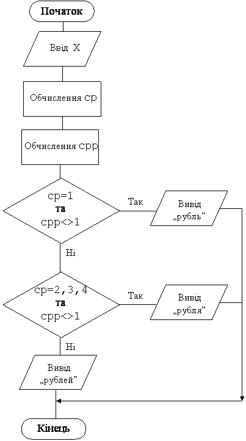
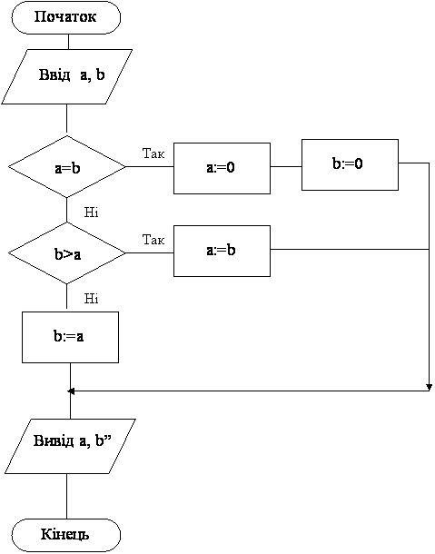

Назад
Зміст
Вперед
Задачі з вкладеними умовними операторами
Приклад 1
Дано натуральне число. Надрукувати біля цього числа слово рубль у відповідному відмінку.
Дано: натуральне число.
Знайти: умову, коли потрібно говорити „рубль”, коли „рубля”, коли „рублей”. Отже випадків буде 3.
| Приклади чисел | Відповідне слово | Висновок |
|---|
| 1, 21, 131, 5421 | рубль | Остання цифра 1, окрім 11 |
| 2, 3, 4, 32, 23, 54, 342, 7653 | рубля | Остання цифра 2, 3, 4, окрім випадків коли передостання=1 |
| 5, 6, ..11, 12,..19, 20, 511, 87605 | рублей | У інших випадках |
Змінні:
Вхідні:
Проміжні:
- cp– остання цифра числа x
- cpp – передостання цифра числа x
Всі вхідні дані цілого типу (integer).
Алгоритм
- Ввід числа x
- Обчислення cp та cpp
- Перевіряємо останню та передостанню цифру:
- Якщо cp=1, а cpp<>1, то друкуємо слово рубль
- У іншому випадку, якщо cp=2, 3, або 4 та cpp<>1, то друкуємо слово рубля.
- у інших випадках (умову можна не складати) друкуємо слово рублей.
Блок-схема програми

Програма
Var x,cp,cpp:word;
begin
read(x);cp:=x mod 10;cpp:=x div 10 mod 10;
if (cp=1)and(cpp<>1)then writeln('рубль’)
else
if (cp>=2)and(cp<=4)and(cpp<>1) then writeln('рубля’)
else writeln('рублей’)
end.
|
Приклади результатів роботи програми
| Ввід | Вивід |
|---|
| 671 | рубль |
| 211 | рублей |
| 54 | рубля |
Приклад 2
Дано два цілих числа. Якщо вони рівні, то замініть їх нулями, а якщо ні, то кожне замініть найбільшим.
Дано: два цілих числа.
Знайти: змінити ці числа та вивести їх значення на екран.
Змінні:
Вхідні:
- a – перше число
- b – друге число
Вихідні:
- a – перше число
- b – друге число
Всі вхідні дані цілого типу (integer).
Алгоритм
- Ввід чисел a,b
- Можливі три випадки: числа рівні, перше більше другого, друге більше першого.
- Порівнюємо введені числа:
- Якщо a=b, то присвоюємо цім числам 0
- У іншому випадку, якщо a< b (b найбільше), то присвоюємо a значення b.
- у іншому випадку (a найбільше, a > b можна не записувати) то присвоюємо b значення a.
- Вивід змінених чисел на екран
Блок-схема програми

Програма
var a,b:integer;
begin
read(a,b);
if a=b then begin a:=0; b:=0;end
else
if a < b then a:=b
else b:=a;
writeln(a,' ',b);
end.
|
Приклади результатів роботи програми
| Ввід | Вивід |
|---|
| 4 4 | 0 0 |
| 3 7 | 7 7 |
| 8 5 | 8 8 |
Приклад 3
Дано дійсне число X, що є аргументом функції. Складіть програму для обчислювання значень функції Y
Дано: одне дійсне число .
Знайти: інше дійсне число за формулою.
Змінні:
Вхідні:
Вихідні:
Всі дані дійсного типу (real).
Алгоритм
- Ввід числа x
- Перевіряємо введене число:
- Якщо x<-1, то обчислюємо значення функції за формулою y:=-1
- У іншому випадку (тобто x>=-1), та x<=1 обчислюємо значення функції за формулою y:=x
- у іншому випадку, тобто x>1 обчислюємо значення функції за формулою y:=1.
- Вивід обчисленого значення функції y на екран
Програма
Var x,y:real;
begin
read(x);
if x<-1 then y:=-1
else
if x<=1 then y:=x
else y:=1;
writeln(y:1:2);
end.
|
Приклади результатів роботи програми
| Ввід | Вивід |
|---|
| -10 | -1 |
| -0.5 | -0.5 |
| 5 | 1 |
Варіанти задач
- Дано дійсне число. Складіть програму для обчислювання значень функції y(x):
- Дано число. Надрукувати номер декади (1-10 –перша; 11-20 –друга 21-31 –третя).
- Дано температура. Виведіть стан у якому знаходиться вода при цій температурі.
- Дано кут. Визначте його тип (гострий, прямий, тупий, розгорнутий, більше розгорнутого, повний).
- Дано возраст людини. Напишіть програму, яка аналізує людину по возрасту та відносить його до одної з чотирьох груп: дошкільник, школяр, робітник, пенсіонер.
- Дано ціле число x. Якщо воно додатне, то додайте до нього 1, якщо від’ємне, то відніміть від нього 2, якщо дорівнює 0, то замініть його на 10.
- Ракета запускається з екватора зі швидкістю v км/с. Який результат запуску? Пояснення: якщо v<=7.8 км/с, то ракета впаде на Землю, якщо 7.816.4, то ракета покине Сонячну систему.
- Дано числа x, y. Якщо x та y від’ємні, то кожне значення замініть його модулем; якщо від’ємне тільки одне з них, то обидва значення збільшить на 0.5; якщо обидва значення невід’ємні, то обидва значення збільшить у 10 раз.
- Дано дійсні числа a, b, c. Якщо a<=b<=c, то кожне число замініть найбільшим з них; якщо a>b>c, то числа не змінювати, у інших випадках всі числа замініть їх квадратами.
- Якщо сума трьох різних дійсних чисел x, y, z менше 1, то найменше з цих чисел замініть півсумою двох інших; якщо ні, то замініть менше з x та y півсумою двох інших чисел.
- Дано три числа. Якщо трикутник з такими сторонами існує то визначте його тип (рівносторонній, рівнобедрений, різносторонній).
- Дано x, y цілочисельні координати точки на площині. Вивести де знаходиться точка з такими координатами (в початку координат, на осі OX, на осі OY,на площині).
- Дано три цілих числа. Вивести їх на екран за зростанням.
- Лінійне рівняння a*x=b може мати один корінь (a<>0, b<>0), може мати нескіннченну кількість коренів (a=0, b=0), а може не мати коренів (a=0, b<>0). Дано дійсні числа a, b. Розв’яжіть рівняння.
- Нехай на годиннику h годин и min хвилин. Скільки буде через хвилину?
- Рік є високосним, якщо його номер кратний 4, але не кратний 100, або кратний 100 та кратний 400 (наприклад, 1995, 1700, 1800 и 1900 не високосні роки, 1996, 2000 –високосні). Дано натуральне число N. Визначити, чи є високосним рік з цім номером.
- Дата деякого дня визначається трьома натуральними числами: g (рік), m (порядковий номер місяцю) и d (число). По даним g, m та d визначте дату завтрашнього дня. Рік не є високосним.
- Дата деякого дня визначається трьома натуральними числами: g (рік), m (порядковий номер місяцю) и d (число). По даним g, m та d визначте дату вчорашнього дня. Рік не є високосним.
Назад
Зміст
Вперед